Hjalmar's portfolio
About me
I'm Hjalmar Lundmark, a student at
TE4 Umeå, where I study web development and programming.
Born and raised in Robertsfors, outside Umeå.
You can reach me through E-mail or LinkedIn.
I speak fluent Swedish and English.
My skills include:
-
Java
-
JavaScript
-
HTML
-
CSS
-
Nunjucks
-
React.js
-
Node.js
-
Express.js
-
MySQL & SQL queries
-
Git & Github
Links
Projects I've made
* = page currently down due to database issues
-
Halloween javascript game
Github repo
A game built with javascript and canvas themed around halloween. The game is a so-called 'Twinsticks shooter' where you can move the character around the screen and shoot in any direction. The goal is to get as many points as possible while surviving increasing amounts of enemies.
Skills: Javascript gamemaking, canvas.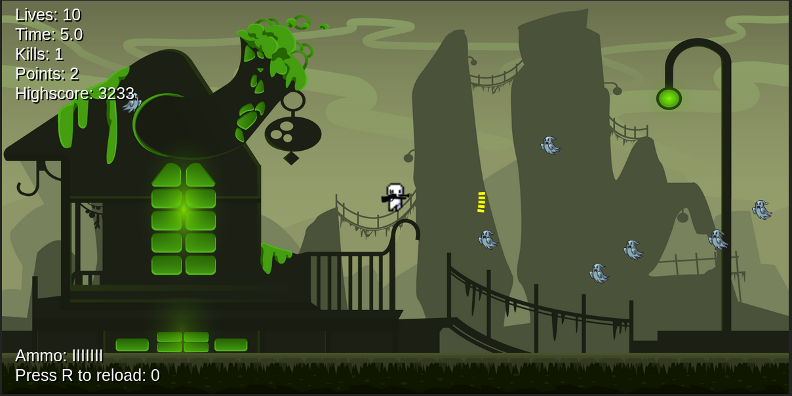 -
Webshop for animal clothing
Frontend Github repo | Backend Github repo
Assingment to create a webshop frontend and a backend to use as an API which is taking info from a database.
Skills: HTML, CSS, React, Using API, Express.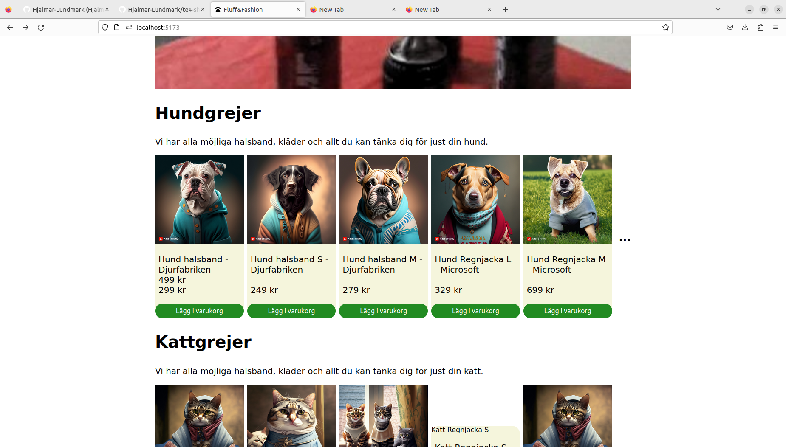 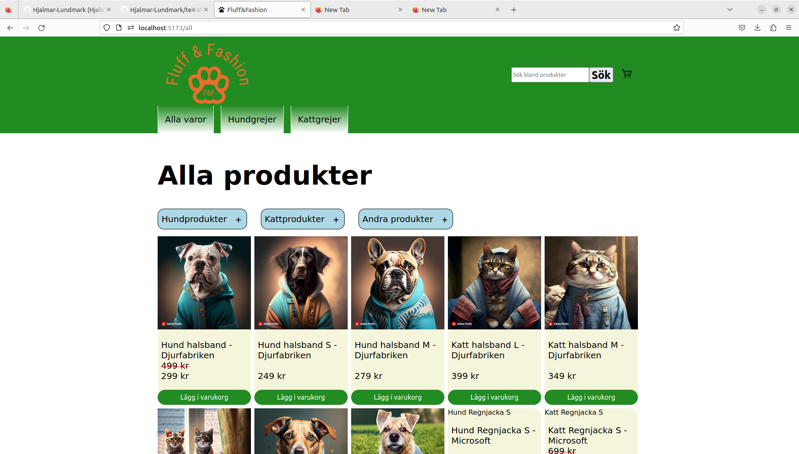 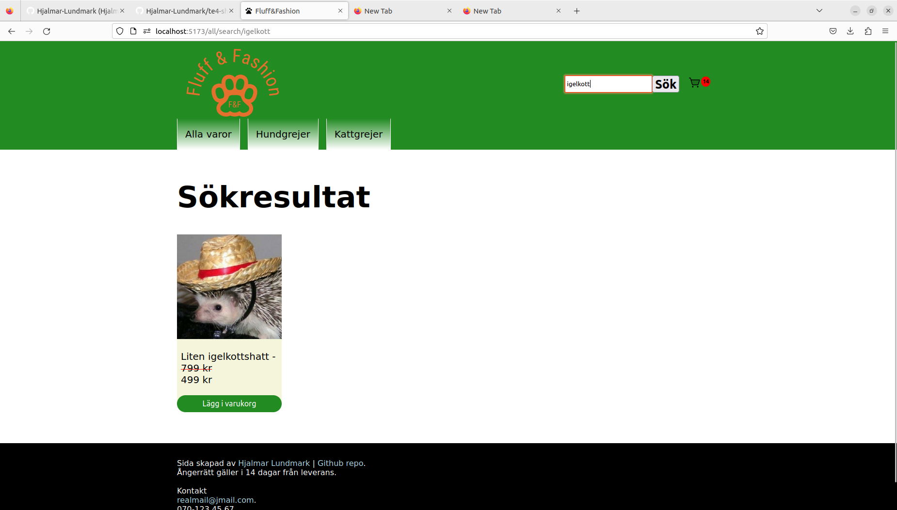 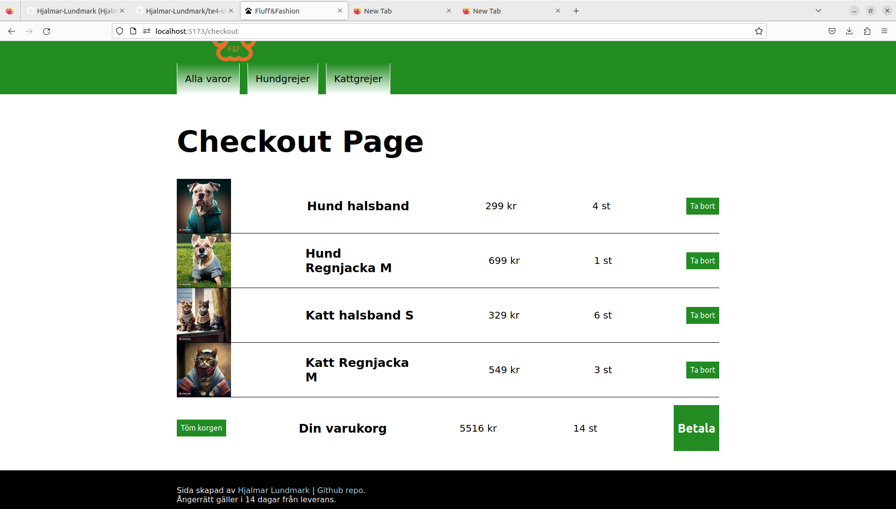 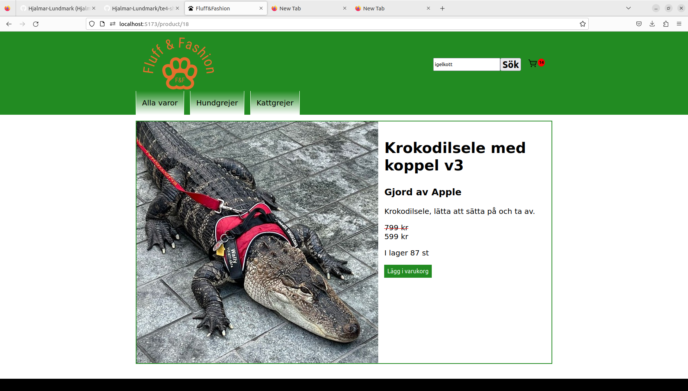 -
Weather site - Darth Väder
Github repo
A website taking an API from OpenWeather and uses it to get weather and temperature data of where the user is located.
Skills: HTML, CSS, React, Using API.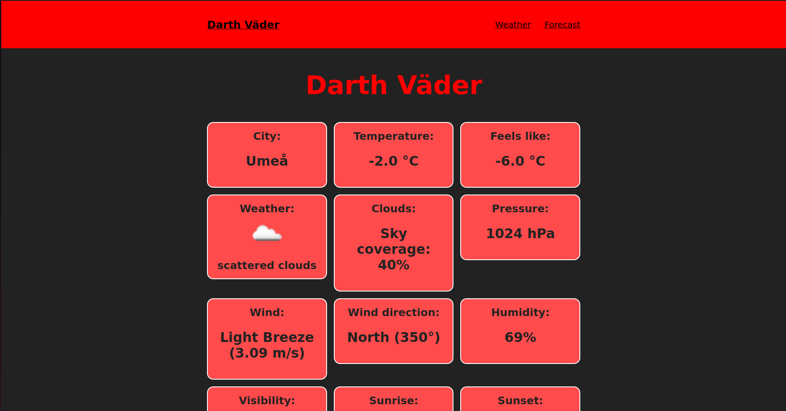 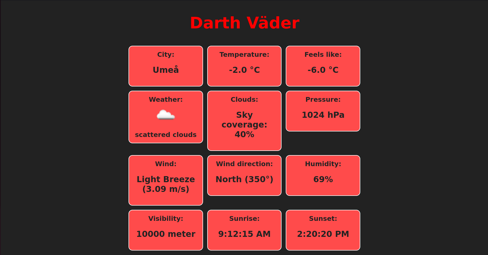 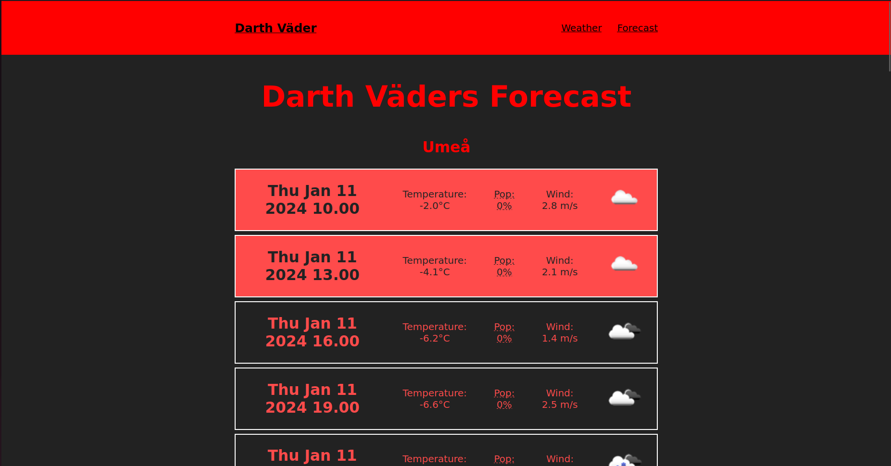 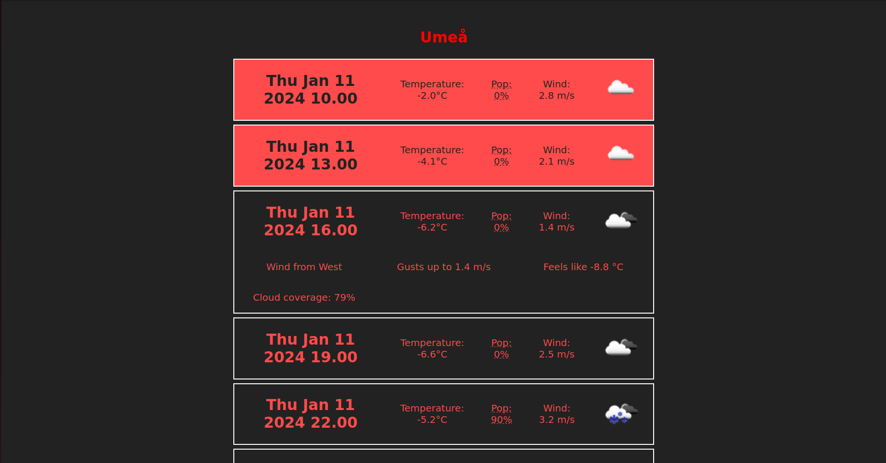 -
Pizza place
Github repo
A website for a fictional pizza place, made as an assignment with Lukas Johanson and Leo Gabrielson.
Skills: HTML, CSS.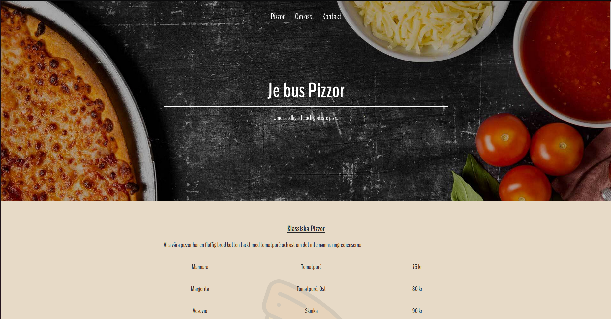 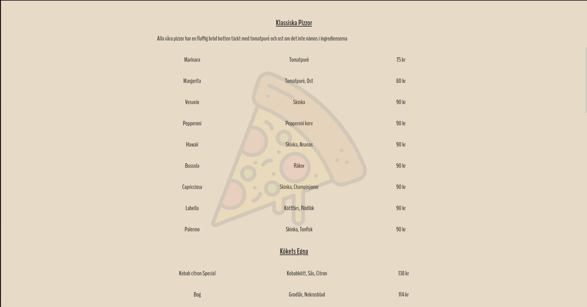 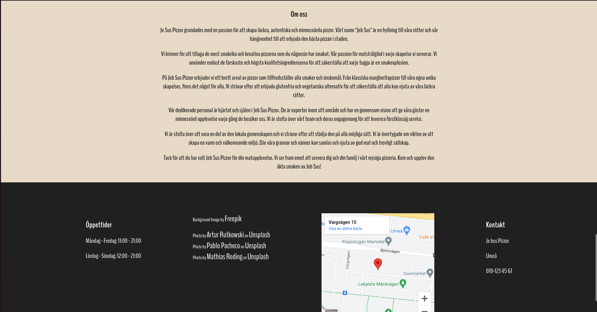 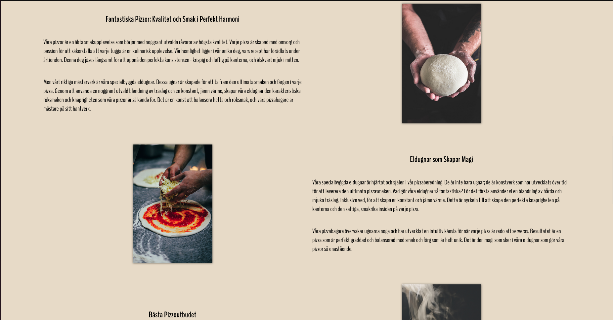 -
Interactive story
Github repo
Page for a fictional interactive story the user gets to click through.
Skills: HTML, CSS, JavaScript. -
Christmas game
Github repo
Small game made with Phazer 3
Skills: JavaScript.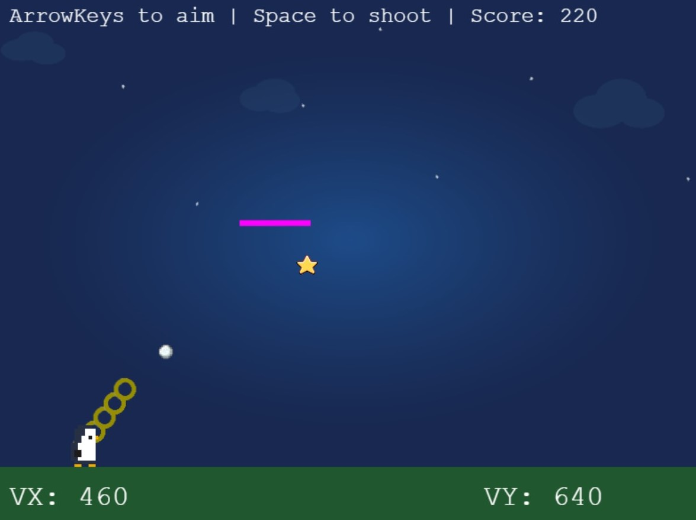 -
Music vote*
Github repo
Page I made at the end of my last year in high school, where my class could vote for their favorite song to play at the graduation ceremony.
Skills: HTML, CSS, JavaScript/Nodejs backend, Expressjs, MySQL.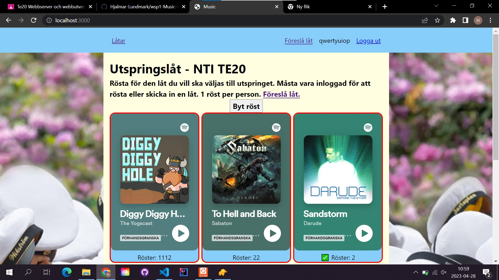 -
Country api
Github repo
Small page taking an api off countries data and turning into info. Also contains a page where I tested some stuff with display: grid.
Skills: HTML, CSS, using an API. -
Gymnasiearbete
Github repo
Small page for reading and downloading my Gymnasiearbete (Swedish equivalent of a bachelor's thesis).
Skills: HTML, CSS. -
Forum with login*
Github repo
A forum for users to post messages, with a login system and a database to store the messages.
Skills: HTML, CSS, JavaScript/Nodejs backend, Expressjs, MySQL.